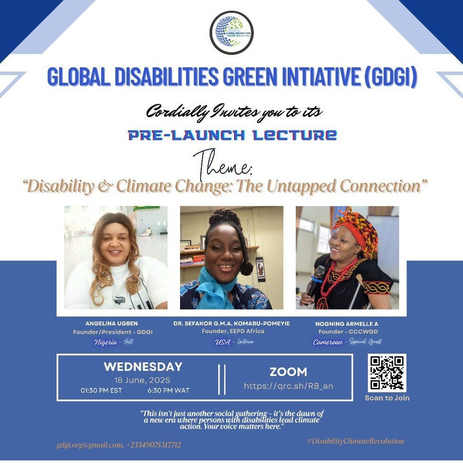

Our calendar
Events
At GDGI, every event represents progress toward a greener, more inclusive world.
Archive
Past events

Past
July 2025 (date to be reconfirmed with GDGI — see README)
Disability-Inclusive Solar Installation Training (Cohort 2 Launch)
Abuja, Nigeria
A two-week, hands-on program equipping persons with disabilities with technical knowledge and skills in solar PV installation, maintenance, and renewable-energy entrepreneurship.
Event details →
Past
18 June 2025
Pre-Launch Lecture: "Disability & Climate Change — The Untapped Connection"
Virtual, via Zoom
Ahead of GDGI's official launch, a virtual lecture bringing together disability-climate advocates from Nigeria, the USA, and Cameroon to make the case that disability inclusion is central to climate action.
Event details →